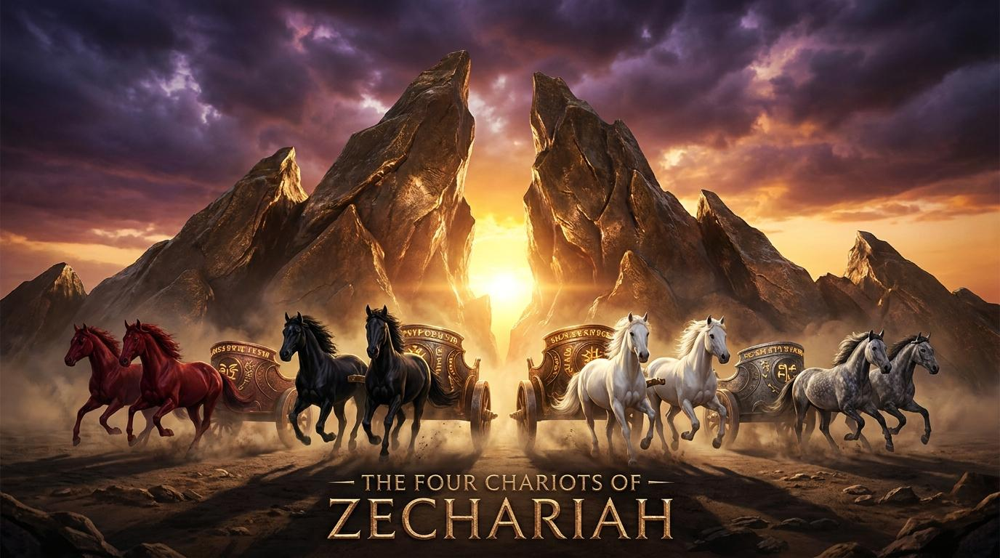

神聖的加冕與終極的安息
弟兄姊妹，當你環顧現今的世界，你是否曾懷疑上帝還掌權嗎？撒迦利亞書揭示，上帝的主權永遠立定。透過四輛戰車的異象，我們看見神絕非旁觀者。
更重要的是，和平君王——耶穌基督，同時擁有祭司與君王的雙重身份。很多時候我們只想要祭司的赦免，卻不願受君王的治理，但唯有全然順服，方能得享真正的和平。
最後，祂呼召我們作為「活石」，參與在宇宙最偉大的建造中。你不只是這世界的一員，更是神國殿宇的一磚一瓦。

「他要建造耶和華的殿，並擔負尊榮，坐在位上掌王權。」
主耶和華，掌管歷史與萬國的主宰。當我們面對動盪的世界與未知的明天時，求祢開我們的屬靈眼睛，看見祢的戰車已經在全地巡行，祢的旨意必然成就。求祢幫助我們降服在和平君王、大祭司耶穌基督的權柄之下，不僅領受祂的救恩，更尊崇祂為我們生命的主。願祢的靈激動我們，使我們成為建造祢屬靈聖殿的器皿。奉主耶穌基督得勝的名求，阿們。
主前520年，波斯帝國統治時期。重建聖殿工程因攔阻而停頓。面對龐大的帝國與弱小的歸回群體，百姓深陷疑慮，本章透過異象與象徵行動，重建百姓對上帝主權的確信。
運用希伯來詩歌意象（銅山、四車）、啟示文學（異象報告）、預表論（大祭司約書亞作為彌賽亞預表）及聖約法庭審判結構。
上帝透過銅山象徵不可動搖的寶座，四車即是「天的四風」，執行全地的絕對主權。當世界局勢動盪，神已佈局。
預言彌賽亞身兼君王與祭司，實現神人合一的和平。祂不僅贖罪，更統管生命。
打破血統侷限，神國度向萬民敞開，呼籲今日門徒共同參與屬靈聖殿的建造。
弟兄姊妹，當你環顧現今的世界，你是否曾懷疑上帝還掌權嗎？撒迦利亞書揭示，上帝的主權永遠立定。透過四輛戰車的異象，我們看見神絕非旁觀者。
更重要的是，和平君王——耶穌基督，同時擁有祭司與君王的雙重身份。很多時候我們只想要祭司的赦免，卻不願受君王的治理，但唯有全然順服，方能得享真正的和平。
最後，祂呼召我們作為「活石」，參與在宇宙最偉大的建造中。你不只是這世界的一員，更是神國殿宇的一磚一瓦。